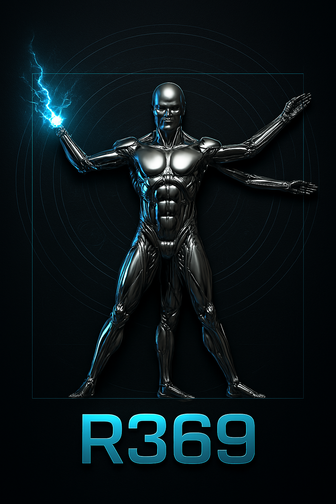

ARSENAL R369 - GUIA DE CAMPO
... (o resto do conteúdo continua igual)
ARSENAL R369 - GUIA DE CAMPO
TEMA: GUI vs. NLI - A Transição de Paradigma na Interação
Humano-Computador
DE: Módulo 0, Aula 1: A Nova Interface
Humano-Computador
NÍVEL DE AMEAÇA: Baixo (Conceitual)
OPORTUNIDADE ESTRATÉGICA: Dominar a nova interface é a
habilidade de maior alavancagem da década.
1. ANÁLISE DO PARADIGMA LEGADO: GUI (Graphical User Interface)
A Interface Gráfica do Usuário foi a revolução que colocou um computador
em cada mesa. Nascida no lendário Xerox PARC na década
de 70 e popularizada pela Apple com o Macintosh em 1984, a GUI traduziu
a complexidade computacional para uma linguagem universal: a visual.
-
Princípio Operacional: Interação Direta. O usuário
manipula objetos visuais (ícones, janelas, menus) que representam
arquivos, pastas e ações. O mouse é o principal vetor de comando.
-
Modelo Mental: Metáfora do "Desktop" (Mesa de
Trabalho). O sistema simula um ambiente físico familiar para reduzir a
carga cognitiva.
-
Fluxo de Controle:
Limitado pelo Desenvolvedor. O poder do usuário está
restrito ao que os designers e engenheiros previram e implementaram
como um botão, um menu ou uma opção clicável. Você opera dentro de um
"ambiente controlado".
-
Habilidade Requerida:
Navegação e Reconhecimento. A proficiência em uma GUI
é medida pela sua capacidade de encontrar e reconhecer o controle
correto para a tarefa desejada.
2. ANÁLISE DO PARADIGMA DE VANGUARDA: NLI (Natural Language Interface)
A Interface de Linguagem Natural é a evolução direta, onde a barreira
entre a intenção humana e a execução computacional é drasticamente
reduzida. Em vez de procurar por uma ferramenta (botão), você
comanda a criação da ferramenta e seu resultado
simultaneamente.
-
Princípio Operacional:
Delegação de Tarefa. O usuário descreve o resultado
final desejado em sua própria linguagem, delegando a execução dos
"como" para a máquina.
-
Modelo Mental: Metáfora do "Copiloto" ou "Chief of
Staff". A IA não é uma ferramenta passiva, mas um agente ativo que
interpreta, planeja e executa com base em diretrizes.
-
Fluxo de Controle:
Limitado pelo Usuário. O poder do sistema é um
reflexo direto da clareza, contexto e precisão da instrução do
usuário. O "ambiente controlado" é substituído por um "ambiente de
possibilidades".
-
Habilidade Requerida:
Engenharia de Instrução (Prompt). A proficiência em
uma NLI é medida pela sua capacidade de arquitetar um comando que
elimina a ambiguidade e guia a IA para o resultado ótimo.
3. SÍNTESE E DIRETRIZ ESTRATÉGICA (R369)
A transição de GUI para NLI não é apenas uma mudança de interface; é uma
transferência de poder e responsabilidade do
desenvolvedor para o usuário.
|
Atributo
|
Paradigma GUI
|
Paradigma NLI
|
Implicação Estratégica
|
| Foco |
Ferramenta (O "Como") |
Resultado (O "Quê") |
Pare de procurar botões. Comece a arquitetar resultados.
|
| Valor |
Em saber usar o software |
Em saber instruir o sistema |
Sua habilidade de comunicação torna-se um ativo produtivo.
|
| Eficiência |
Linear (mais cliques, mais tempo) |
Exponencial (melhor prompt, resultado massivo)
|
O "leverage" (alavancagem) de um único bom prompt é imenso.
|
| Mestre |
O Software |
Você, o Arquiteto |
Você não é mais um usuário. Você é um operador.
|
Conclusão: Dominar a GUI foi sobre aprender a operar
uma máquina. Dominar a NLI é sobre
aprender a liderar um exército de máquinas. Bem-vindo à
vanguarda.